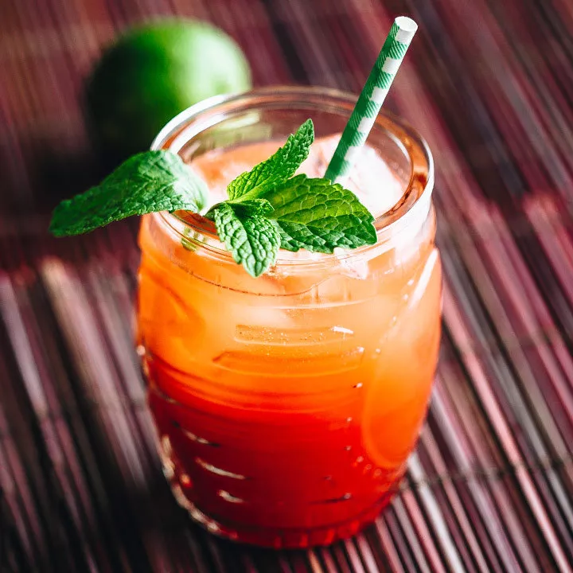

Planter's Punch

This is a recipe from liquor.com
A Planter's Punch is a rum-based tropical drink that is a bit on the sweeter side, thanks to the grenadine.
Ingredients:
- 2 oz. dark rum
- 1 oz. simple syrup
- 3/4 oz. lime juice, freshly squeezed
- 1 tsp. grenadine
- 3 dashes Angostura bitters
- 1 splash club soda, chilled
- Garnish: mint sprig or cherry and orange
Steps:
- Add dark rum, simple syrup, lime juice, grenadine, and bitters into shaker with ice.
Shake until well-chilled.
- Strain into Collins glass over crushed ice, and top with a splash of club soda
- Garnish and serve!
Home